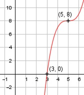

Aufgabe 46 f(x) = x3 - 15x2 + 75x - 117 f'(x) = 3x2 - 30x + 75, f''(x) = 6x - 30, f'''(x) = 6 Definitionsbereich: -∞ < x < ∞ Wertebereich: -∞ < f(x) < Asymptoten: - Symmetrie: - Nullstellen: x3 - 15x2 + 75x - 117 = 0 Durch Probieren gefunden x = 3. Hornerschema: 1 -15 75 -117 x1 = 3 3 -36 117 --------------------------- 1 -12 39 0 Polynomdivision: x3 - 15x2 + 75x - 117 : (x - 3) = x2 - 12x + 39 -(x3 - 3x2) ------------- -12x2 + 75x - 117 -(-12x2 + 36x) -------------- 39x - 117 -(39x - 117) ------------ 0 x2 - 12x + 39 = 0 p, q - Formel: p = -12, q = 39 x2,3 = x2,3 = 6 ± x2,3 = 6 ± --> keine weiteren Nullstellen N1(3|0) Schnittpunkt mit der y-Achse: f(0) = 03 - 15 * 02 + 75 * 0 - 117 = -117 Sy(0|-117) Extrempunkte: 3x2 -30x + 75 = 0 A, B, C - Formel: A = 3, B = -30, C = 75 x1,2 = x1,2 = x1,2 = x1,2 = 5 f(5) = 53 - 15 * 52 + 75 * 5 - 117 = 8 f''(5) = 6 * 5 - 30 = 0 --> kein Extrempunkt Wendepunkt: 6x - 30 = 0 |+30 6x = 30|:6 x = 5, f(5) = 8, f'(5) = f''(5) = 0, f'''(5) ≠ 0 --> Wendepunkt (Sattelpunkt) (5|8) Graph:
